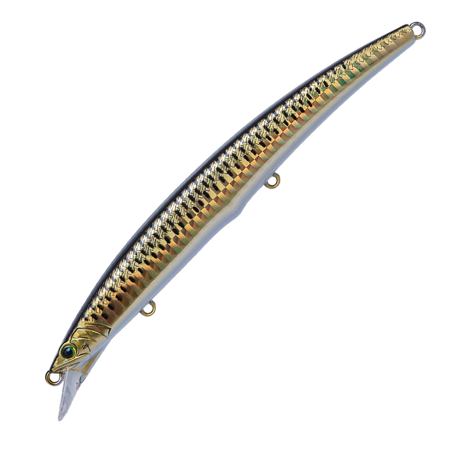
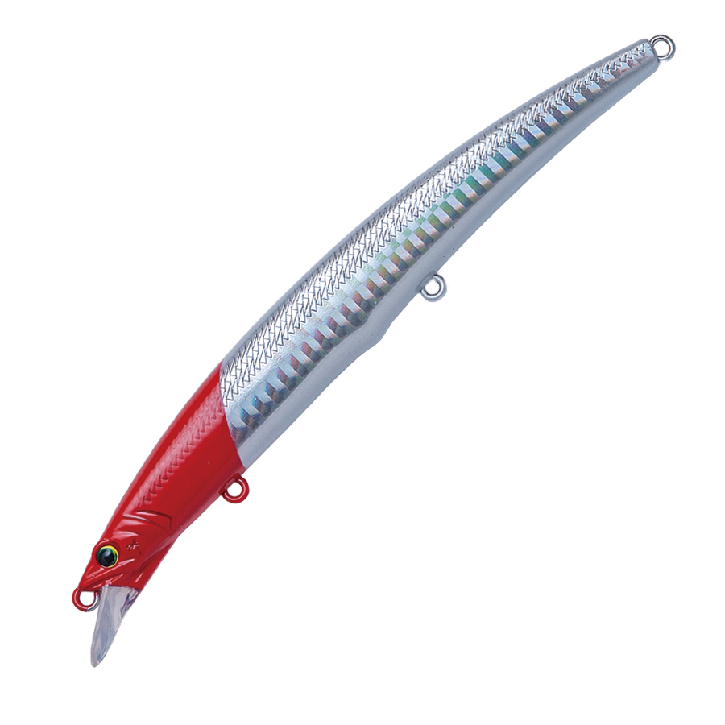
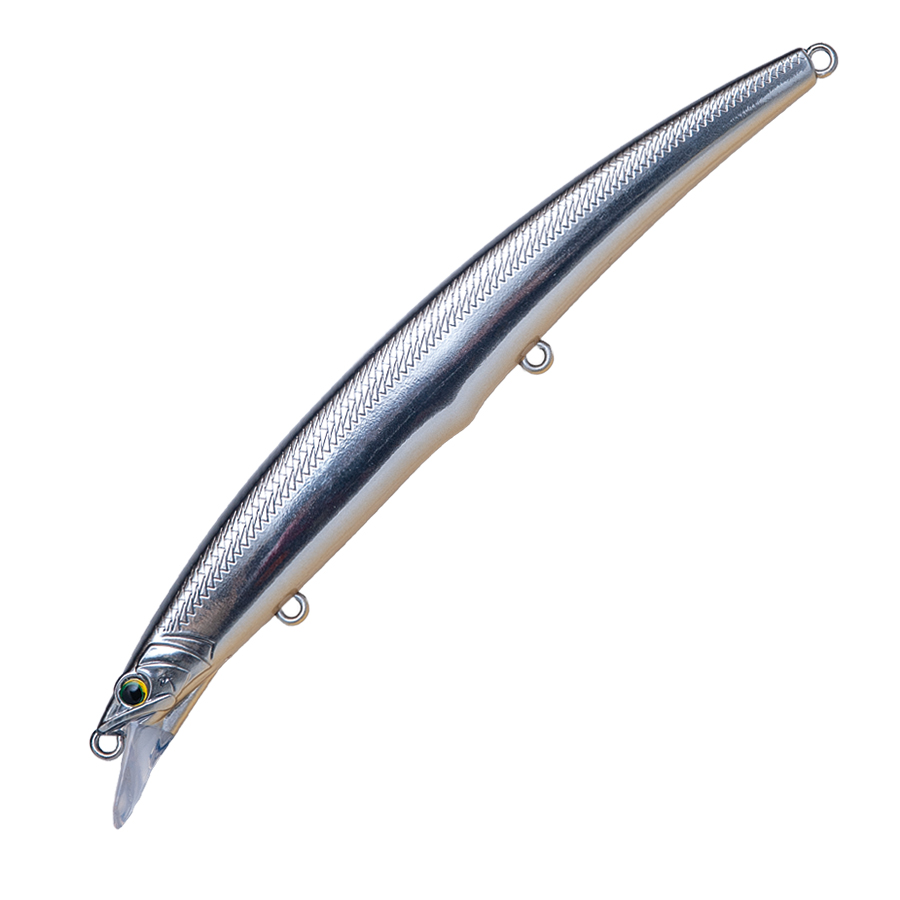

アークローバー ショートリップ LCチューン
（Ark Rover Short Lip LC TUNE）
アークローバー ショートリップ LCチューンはPALMS（パームス）のシンキングミノーです。
ジャーキングミノーのアークローバーをショートリップ化したロングキャストチューン。タングステンボールによる圧倒的な飛距離はそのままに、潜行深度だけをワンランク浅く設定しました。多くのサーフでボトムを小突かずに攻められ、シーバス・フラットフィッシュ・海サクラなどを狙えます。125mm（ARS-125L）と140mm（ARS-140L）の2サイズがあります。

画像出典:PALMS公式HP
スペック
- メーカー
- PALMS（パームス）
- 品番
- ARS-125L／ARS-140L
- タイプ
- シンキングミノー
- 全長
- 125mm／140mm
- 自重
- 20g（125L）／27g（140L）
- フック
- #6（#6〜#5対応・125L）／#4（140L）
- 重心
- 3ボールタングステン重心移動
- ターゲット
- シーバス・フラットフィッシュ・海サクラ
- 価格
- 2,350円（125L）／2,450円（140L）（税抜）
▼今すぐチェック


アークローバー ショートリップの特徴
アークローバーの飛距離とダートはそのままに、ワンランク浅く
-
リップのショート化
シャローレンジを攻めるために、テストを重ねて決めたリップの面積。潜行深度だけでなく、キャスト時の姿勢の安定やジャーキングのダート性能にも配慮しています。
-
3ボールタングステン重心移動
ノーマルのアークローバーでステンレスだった前2つのボールもタングステンに変更してバランスを取り直した「TUNGSTEN 3BALLS」。飛距離と立ち上がりのよさを両立しています。
-
ただ巻きもジャークも
リーリングではウォブリング主体のナチュラルなウォブンロール、ジャーキングではアークローバー譲りのキレのあるダートを出せます。
アークローバー ショートリップの使い方
基本はただ巻き。ウォブリング主体のナチュラルなウォブンロールで、サーフのシャローを広く探ります。
反応がないときや、ベイトが逃げ惑っている状況では、ジャーキングを入れてアークローバー譲りのダートで誘ってみましょう。
アークローバー ショートリップの得意な状況
ボトムが浅いサーフで、底を小突かずにシャローを引きたいとき。飛距離が出るので、遠くの離岸流やブレイクまで届かせたい場面にも向いています。シーバス・ヒラメ・海サクラなど、サーフのターゲットに幅広く使えます。
ワンポイント
同じアークローバーでも、サワラのように中層をジャーキングで攻めるならノーマルのS、サーフのシャローを引くならショートリップと、レンジで選び分けるのがポイントです。
アークローバーシリーズの使い分け
| モデル | 全長／自重 | 得意な場面 |
|---|---|---|
| アークローバー125S | 125mm／17g | ジャーキングミノー。サワラのジャーキングに |
| アークローバー140S | 140mm／23g | ジャーキングミノー。シルエットと飛距離が欲しいときに |
| アークローバー ショートリップ125L | 125mm／20g | ワンランク浅いレンジ。サーフのシャローに（本記事のモデル） |
| アークローバー ショートリップ140L | 140mm／27g | ワンランク浅いレンジを遠投で（本記事のモデル） |
サワラを中層でジャーキングするならアークローバー（S）、ボトムを小突かずにシャローを攻めたいサーフではショートリップと、レンジで使い分けましょう。サイズはベイトの大きさと飛距離で選びます。
人気カラー
全12色の中から4色を紹介します。
 H10 イワシ
H10 イワシ
イワシを意識したナチュラルカラー。サーフのベイトに合わせやすい1色。

H751 近海カタクチカタクチイワシを意識したカラー。カタクチが入ったサーフに。

H01 ホロレッドヘッドホロのフラッシングとレッドヘッドの定番系。

AL235 ブラックバックシャイン背中のブラックでシルエットを出すカラー。ローライトや濁りに。
画像出典:PALMS公式HP
アークローバー ショートリップに似ているルアー
-
 ゼルファス133F
ADUSTA
詳細はこちら＞
ゼルファス133F
ADUSTA
詳細はこちら＞
全長133mm・自重29gのフローティングミノー。巻き速度でアクションを変えられるサーフ向けミノー。
-
 リンバーiF127S
DUO
詳細はこちら＞
リンバーiF127S
DUO
詳細はこちら＞
全長127mm・自重26gのシンキングミノー。中層をただ巻きで引けるサーフ向けモデル。
-
 アークローバー125S
パームス
詳細はこちら＞
アークローバー125S
パームス
詳細はこちら＞
全長125mm・自重17gのジャーキングミノー。幅広のダートとヒラウチで、サワラを誘い出す専用ミノー。